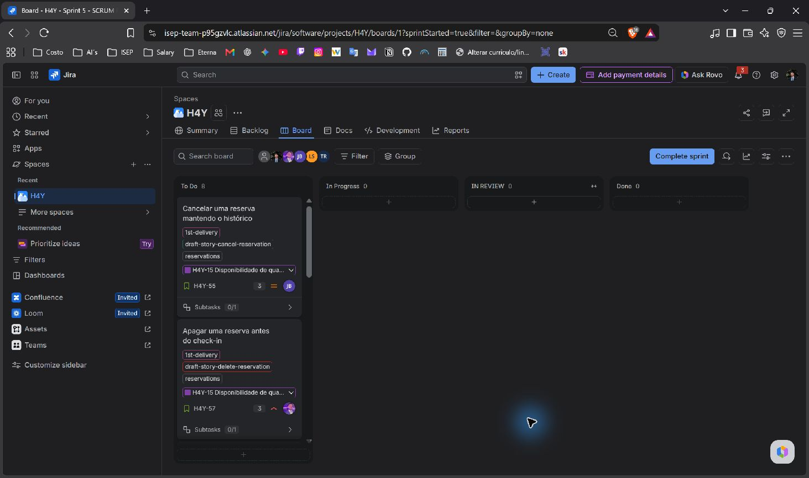
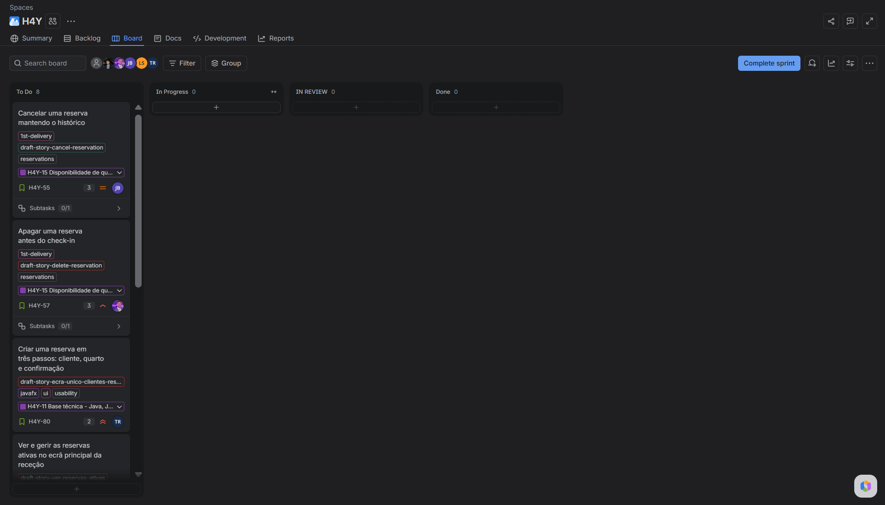
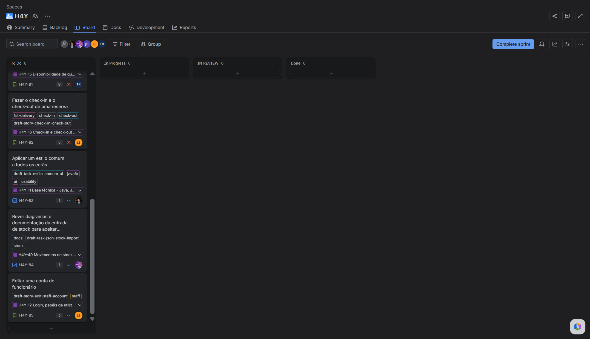

| Preparação | Reunião | Acompanhamento |
|---|---|---|
| - Rever o backlog e o resultado da Sprint 4 - Selecionar os itens por concluir com responsável - Confirmar 8 h por elemento | - Rever o objetivo e os pontos do Jira - Manter os responsáveis atribuídos - Identificar dependências e riscos | - Atualizar o sprint e as datas no Jira - Guardar o quadro inicial - Fazer o daily scrum - Ponto de controlo a 10/11 |
| Nome | Função |
|---|---|
| Pedro Costa | Scrum Master e developer |
| Tiago Borja | Developer |
| Lukas Sperandio | Developer |
| José Cruz | Developer (José Bonito no Jira) |
| António Martinho | Developer |
| Sprint goal | Sprint 4: a receção passa a atender os clientes ao balcão: regista e encontra clientes, diz que quartos estão livres nas datas pedidas e cria a reserva. |
|---|---|
| Pontos da história | 18 pontos concluídos no Jira: H4Y-9 (3), H4Y-51 (2), H4Y-52 (3), H4Y-54 (5) e H4Y-56 (5). O planning inicial previa 20 pontos; a H4Y-53, de 2 pontos, não consta do sprint encerrado no Jira. |
| Resumo | Os cinco itens do Sprint 4 estão em Done. Não há carry-over destes itens para o Sprint 5. O novo sprint inclui os oito itens ainda por concluir e com responsável atribuído. |
| Data de início | 07/11/2026 |
|---|---|
| Data de término | 12/11/2026 |
| Sprint goal | A receção passa a gerir reservas, cancelamentos, check-in e check-out num fluxo mais simples e consistente. |
| Sprint atual | Sprint anterior | |
|---|---|---|
| Total de dias | 6 dias de calendário; 4 dias úteis | 7 dias de calendário; 5 dias úteis |
| Capacidade da equipa | 40 h disponíveis (5 elementos × 8 h) | 40 h disponíveis (5 elementos × 8 h) |
| Capacidade prevista | 26 pontos: 24 de histórias e 2 de tarefas. Inclui todos os itens atribuídos por concluir, por indicação do Scrum Master. | 20 pontos no planning inicial; 18 pontos concluídos no Jira. |
| Capacidade individual | 8 h por elemento | 8 h por elemento |
| Estimação | Pontos existentes no Jira, sem alteração. Escala de Fibonacci. | Escala de Fibonacci. |
Os 26 pontos excedem os 18 concluídos na Sprint 4 e a referência de 21 pontos usada no planning anterior. A seleção mantém todos os itens atribuídos, conforme indicado. Os pontos não são uma conversão direta de horas.
| Risco | Mitigação proposta |
|---|---|
| 26 pontos numa semana mais curta. Tiago tem 10 pontos e Lukas tem 8. | Rever o progresso a 10/11. Sinalizar bloqueios no daily e combinar apoio e revisões cedo. Registar qualquer alteração de âmbito no Jira. |
| H4Y-80, H4Y-81 e H4Y-82 partilham o fluxo de reservas e podem alterar os mesmos ecrãs. | Combinar os contratos e os ficheiros antes de editar. Integrar alterações pequenas e testar o percurso completo de reserva, check-in e check-out. |
| Cancelar e apagar têm efeitos diferentes. Uma reserva com check-in não deve seguir o fluxo de eliminação anterior ao check-in. | José e António alinham as regras dos seus tickets com Lukas. Confirmar dúvidas de requisitos com o professor antes de impor regras novas. |
| O estilo comum da H4Y-83 pode criar conflitos com os novos ecrãs. | Pedro combina os estilos partilhados com Tiago e Lukas e mantém as alterações visuais separadas das regras de negócio. |
| A H4Y-84 pode ser confundida com implementação do importador JSON. | Manter o âmbito do ticket: rever os diagramas e a documentação para JSON além de XML. |
Os itens estão ordenados pela prioridade do Jira: Máxima (Highest), Alta (High), Média (Medium) e Baixa (Low). Os responsáveis e pontos são os do Jira. Só entraram itens por concluir com responsável. A H4Y-58, sem responsável, ficou no backlog.
| N.º | Chave | Item (título no quadro) | Tipo | Prioridade | Pontos | Responsável |
|---|---|---|---|---|---|---|
| 1 | H4Y-80 | Criar uma reserva em três passos: cliente, quarto e confirmação | História | Máxima | 2 | Tiago Borja |
| 2 | H4Y-81 | Ver e gerir as reservas ativas no ecrã principal da receção | História | Máxima | 8 | Tiago Borja |
| 3 | H4Y-82 | Fazer o check-in e o check-out de uma reserva | História | Máxima | 5 | Lukas Sperandio |
| 4 | H4Y-57 | Apagar uma reserva antes do check-in | História | Alta | 3 | António Martinho |
| 5 | H4Y-55 | Cancelar uma reserva mantendo o histórico | História | Média | 3 | José Cruz |
| 6 | H4Y-85 | Editar uma conta de funcionário | História | Baixa | 3 | Lukas Sperandio |
| 7 | H4Y-83 | Aplicar um estilo comum a todos os ecrãs | Tarefa | Baixa | 1 | Pedro Costa |
| 8 | H4Y-84 | Rever diagramas e documentação da entrada de stock para aceitar ficheiros JSON além de XML | Tarefa | Baixa | 1 | António Martinho |
| Total | 26 |
| Responsável | Trabalho | Pontos |
|---|---|---|
| Pedro Costa | H4Y-83 (1) e coordenação como Scrum Master | 1 |
| Tiago Borja | H4Y-80 (2) e H4Y-81 (8) | 10 |
| Lukas Sperandio | H4Y-82 (5) e H4Y-85 (3) | 8 |
| José Cruz | H4Y-55 (3) | 3 |
| António Martinho | H4Y-57 (3) e H4Y-84 (1) | 4 |
| Total | 26 |
Fontes: Jira, Sprint 4 encerrado e Sprint 5 ativo, consultados a 07/11/2026; planning da Sprint 4 na branch docs. Datas, inclusão dos itens atribuídos e disponibilidade confirmadas pelo Scrum Master.
07/11/2026: 8 itens em To Do; 0 em In Progress, In Review e Done. Capturas reais do board, com deslocação na coluna To Do.



Created by: pedrocostaisep. Updated by: pedrocostaisep. AI use: sprint-planner, OpenAI Codex (gpt-6.1-sol), 2026-11-07. Reviewed by: pending.